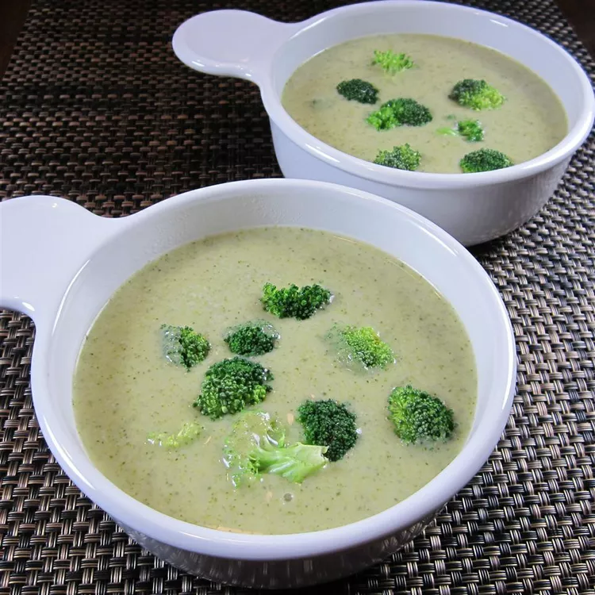

Home
Creamy Broccoli Soup coming right up

Description:
This recipe for broccoli cheese soup is quick, creamy, and hearty.
Ingredients:
- 2 cups chicken broth
- 2 ½ cups fresh broccoli
- ¼ cup chopped onion
- 1 cup milk
- 2 tablespoons all-purpose flour
- 1 cup shredded Cheddar cheese (Optional)
- ½ teaspoon dried oregano
- salt and pepper to taste
Steps:
- Bring broth to a boil. Add broccoli and onion; simmer for 5 minutes, or until broccoli is tender.
- Whisk milk and flour together in a bowl until well blended.
- Stir flour mixture into broth mixture; cook, stirring constantly, until soup is thick and bubbly.
Stir in cheese until melted. Season with oregano, salt, and pepper.